专题03 整式中的数字和图形规律探究的六种模型

目录
题型一：数字类规律探索之排列问题 1
题型二：数字类规律探索之末尾数字问题 4
题型三：数字类规律探索之新运算问题 6
题型四：数字类规律探索之等式问题 8
题型五：图形类规律探索之数字问题 13
题型六：图形类规律探索之数量问题 16

题型一：数字类规律探索之排列问题
1．（25-26七年级上·全国·期中）有一组数： ，−
，− ，
，
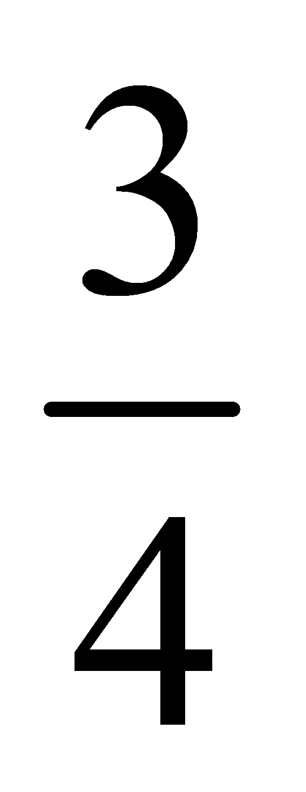
，− ，…，根据这个规律，第n个数是 ．
，…，根据这个规律，第n个数是 ．2．（25-26七年级上·黑龙江哈尔滨·开学考试）按规律排列： ，4，
，4， ，16，
，16， ，64，…，则第7个数为 ．
，64，…，则第7个数为 ．
3．（25-26七年级上·湖北武汉·开学考试）找规律：
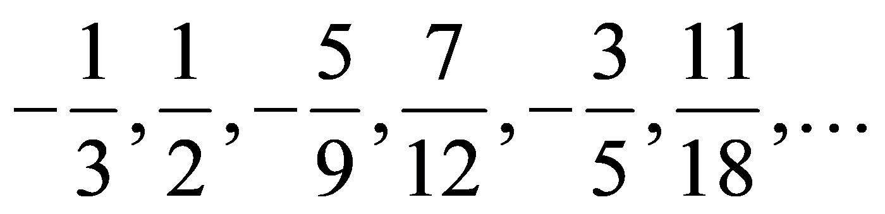
，那么第20个数是 ．4．（25-26七年级上·全国·期中）观察下面三行数：
 ，9，
，9， ，81，…；………………………第①行
，81，…；………………………第①行
1，，9，，…；………………………第②行
，10， ，82，…．……………………第③行
，82，…．……………………第③行
(1)第①行数按什么规律排列？
(2)第②③行数与第①行数分别有什么关系？
(3)设x，y，z分别为第①②③行的第2025个数，求
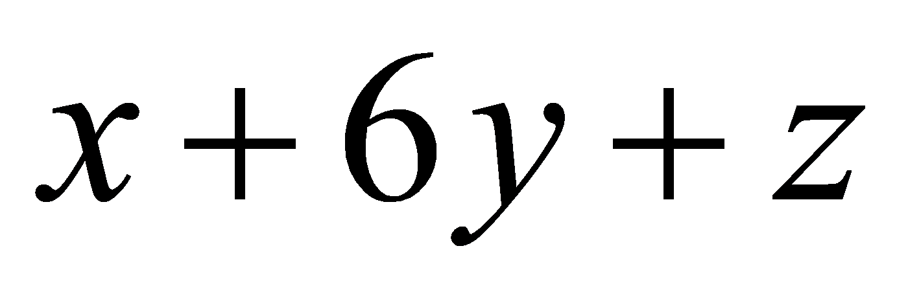
的值．5．（25-26七年级上·全国·课后作业）将连续偶数2，4，6，…排成如下图形，用十字框框出5个数．
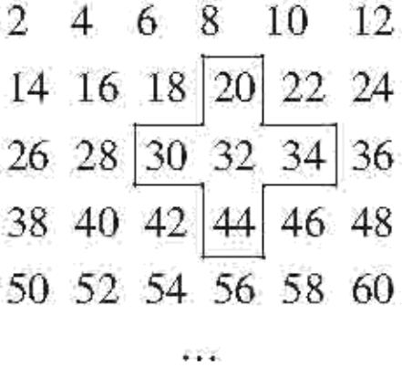
(1)①十字框框出的5个数分别与框中间的数32有什么关系？
②十字框框出的5个数的和与中间的数32有什么关系？
(2)如果将十字框上下左右移动，仍框出5个数，这5个数还有这种规律吗？
(3)设中间的数为a，用代数式表示十字框框出的5个数的和．
题型二：数字类规律探索之末尾数字问题
6．观察： ，
，
 ，
，
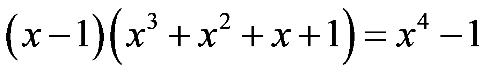
， ，…
，…
据此规律，求
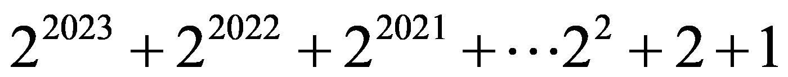
的个位数字是（ ）A． B．
B． C．
C． D．
D．
7.已知
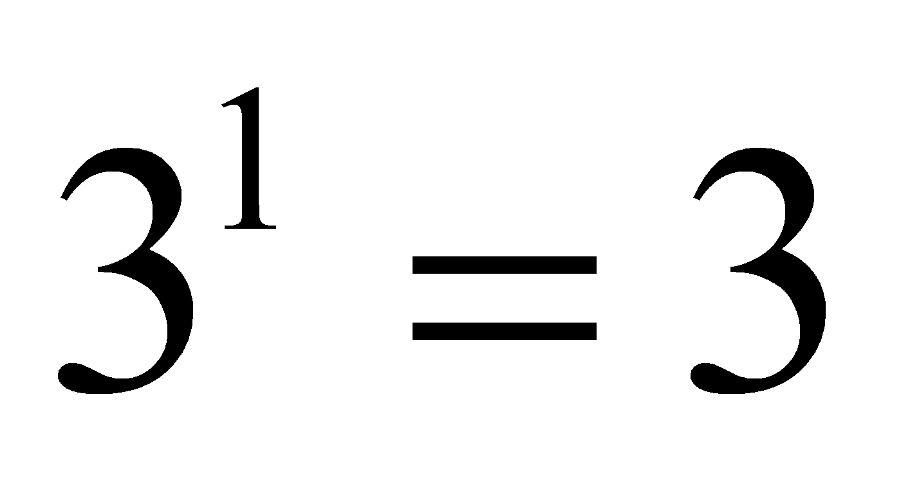
， ，
， ，
， ，
， ，
， ，
， ，推测
，推测 的个位数字是 ．
的个位数字是 ．8.已知 ，
， ，
， ， 根据前面各式的规律，可得：
， 根据前面各式的规律，可得：
（1）  ( )；
( )；
（2） 的值的个位数字是 ．
的值的个位数字是 ．
题型三：数字类规律探索之新运算问题
9.已知有一个新算符“ ”，使下列算式
”，使下列算式 ，
， ，
，
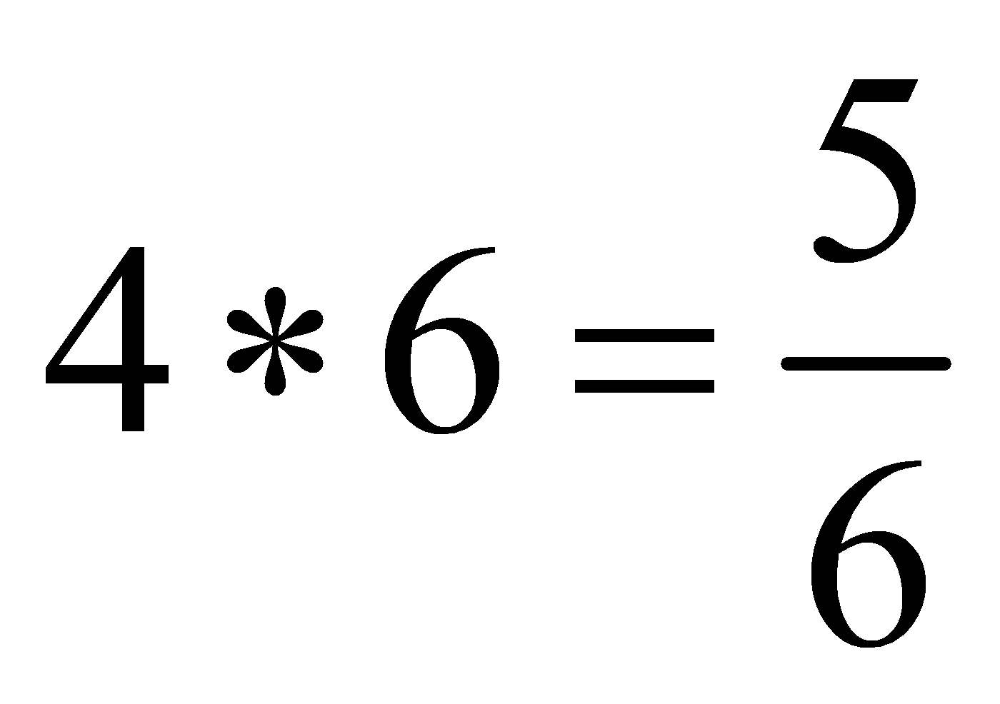
，那么 ．
．10.定义一种对正整数n的“F运算”：①当n为奇数时，结果为 ；②当n为偶数时，结果为
；②当n为偶数时，结果为 （其中k是使为奇数的正整数），并且运算可以重复进行，例如，取
（其中k是使为奇数的正整数），并且运算可以重复进行，例如，取 ，则：
，则：

若 ，则第2024次“F运算”的结果是 ．
，则第2024次“F运算”的结果是 ．
11．（新定义）若记 ，其中
，其中 表示当
表示当 时
时 的值，即
的值，即
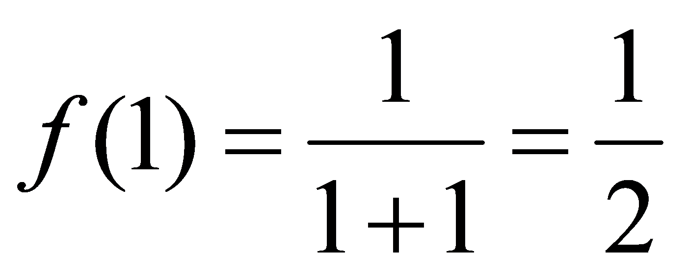
， 表示当
表示当 时的值，即
时的值，即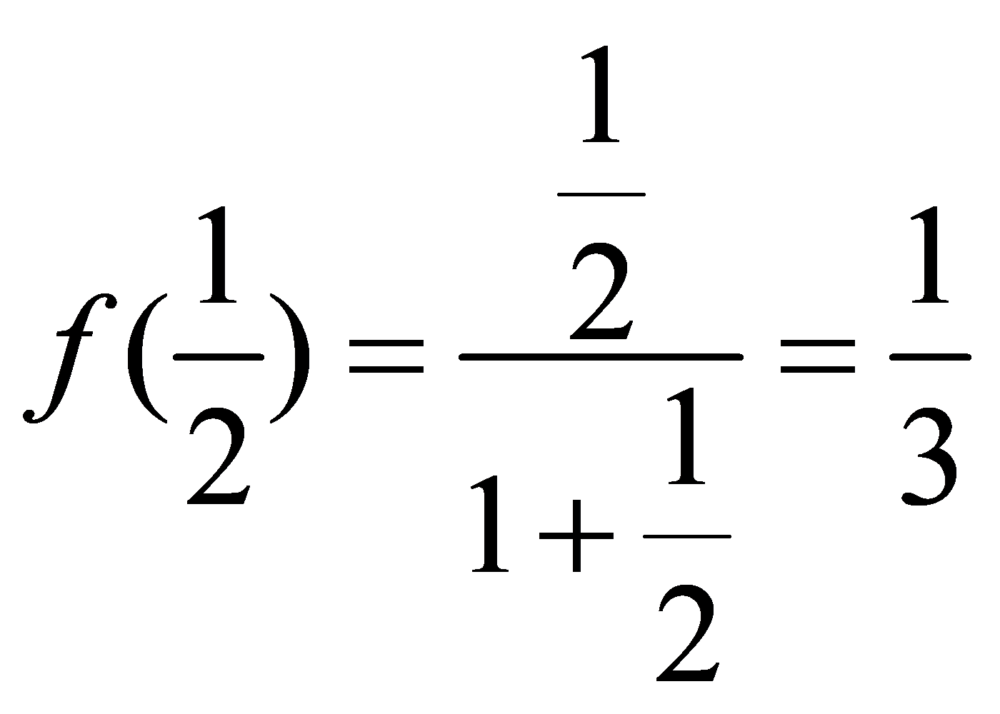
，则 ．
．12．a是不为1的有理数，我们把 称为a的差倒数，如：2的差倒数是
称为a的差倒数，如：2的差倒数是 ，
， 的差倒数是
的差倒数是 ，已知
，已知
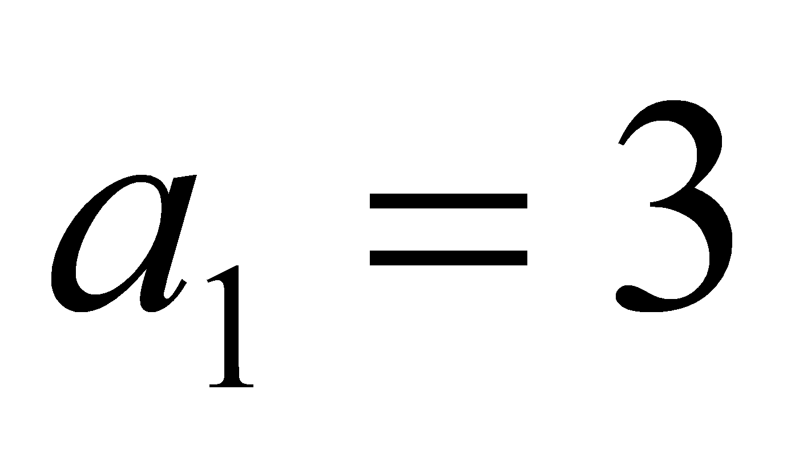
， 是
是 的差倒数，
的差倒数， 是的差倒数，
是的差倒数， 是的差倒数…以此类推，则
是的差倒数…以此类推，则 ．
．题型四：数字类规律探索之等式问题
13.已知， ，
， ，
， ，
， ，…，若
，…，若 符合前面式子的规律，则
符合前面式子的规律，则 ．
．
14．大衍数列：
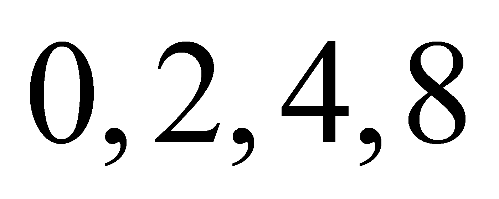
，…，来源于《乾坤谱》中对易传“大衍之数五十”的推论，对于按一定规律排列的数： ，…，依此规律排列，则大衍数列的第11个数是 ．
，…，依此规律排列，则大衍数列的第11个数是 ．15.观察下面的等式：第1个等式： ；第2个等式：
；第2个等式： ；第3个等式：
；第3个等式： ；第4个等式：
；第4个等式： ；……
；……
（1）写出第5个等式：
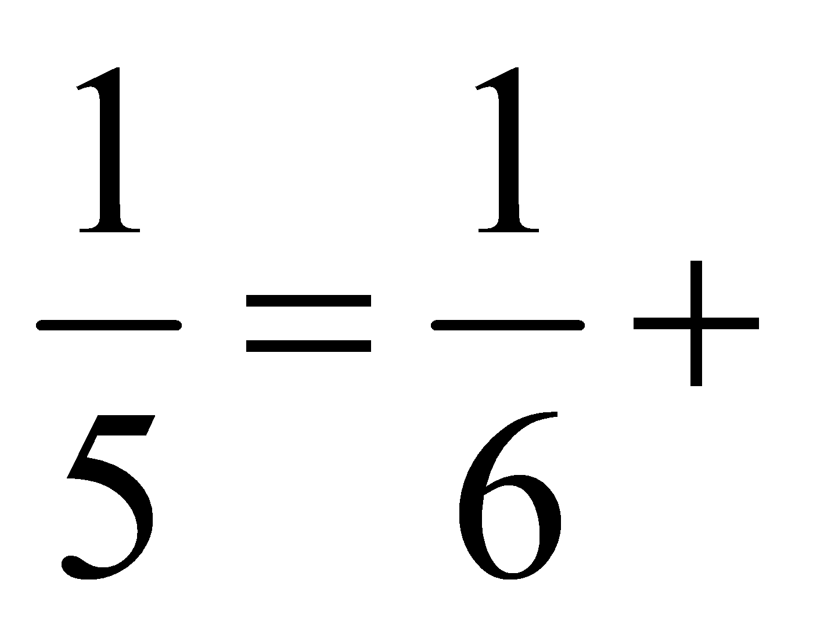
；（2）写出第n个等式： （用含n的式子表示）．
16．（24-25七年级上·广东潮州·阶段练习）观察下列各式，回答问题：
第一个等式： 第二个等式：
第二个等式： 第三个等式：
第三个等式：
(1)猜想并写出：第n个等式为________________（n为正整数）；
(2)请直接写出下列各式的计算结果：
① ___________；
___________；
② _____________．
_____________．
(3)探究并计算：
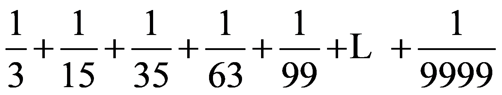
的值．17．（25-26七年级上·江苏泰州·阶段练习）【情景创设】
 是一组有规律的数，我们如何求这些连续数的和呢？
是一组有规律的数，我们如何求这些连续数的和呢？
【探索活动】
（1）根据规律第6个数是 ， 是第 个数；
是第 个数；
（2）我们知道： ，那么： 用含有n的式子表示你发现的规律
，那么： 用含有n的式子表示你发现的规律
【方法属示】
 ．
．
这种方法叫“裂项相消”，构造只有符号不同的中间项，将其全部消掉．
【实践应用】
（3）根据上面获得的经验完成下面的计算：
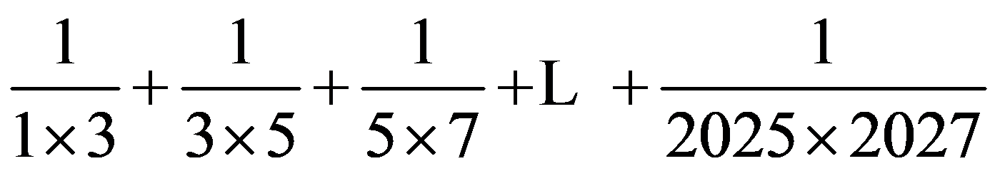
题型五：图形类规律探索之数字问题
18．如图，按以下规律，在第 个三角形中间填入的数是（ ）
个三角形中间填入的数是（ ）

A．
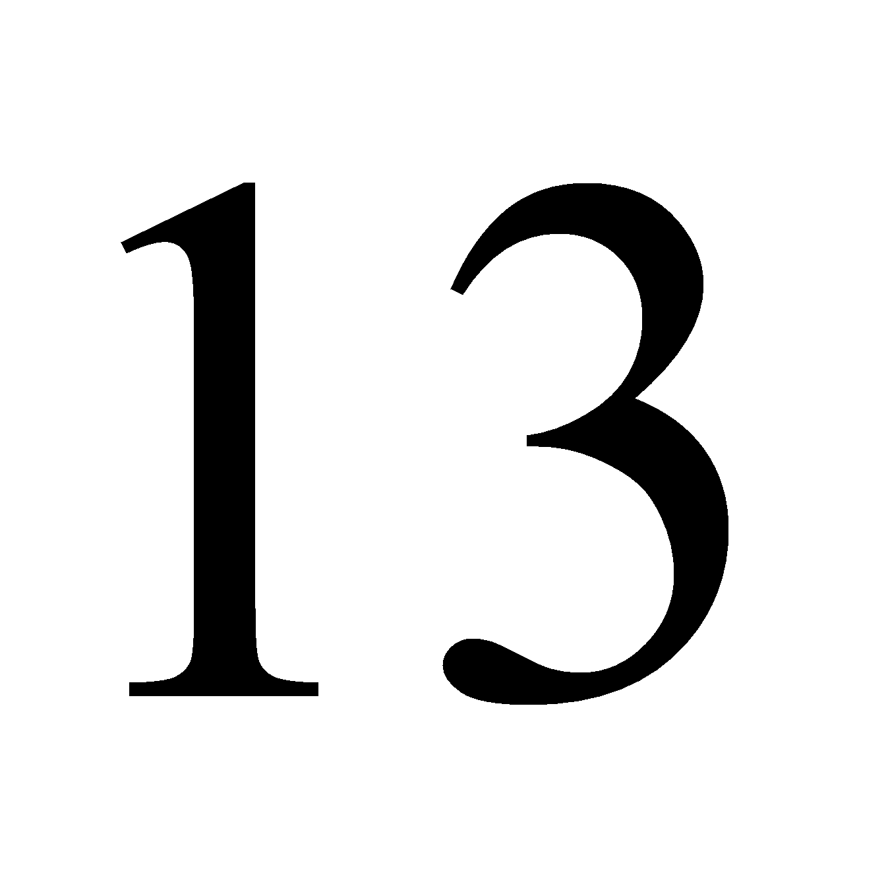
B． C．
C． D．
D．
19.下面每个表格中的四个数都是按相同规律填写的．

根据此规律确定a的值为 ，b的值为 ，x的值为 ．
20.某城市大剧院地面的一部分为扇形，观众席的座位按如下表方式设置，则第五排、第六排分别有 个座位；第n排有 个座位．
排数 | 1 | 2 | 3 | 4 | … |
座位数 | 50 | 53 | 56 | 59 | … |
21.探索规律：
在数学探究课上，小明将一张面积为1的正方形纸片进行分割，如图所示：

第1次分割，将此正方形的纸片三等分，其中空白部分的面积记为 ；
；
第2次分割，将第1次分割图中空白部分的纸片继续三等分，其中空白部分的面积记为 ；
；
第3次分割，将第2次分割图中空白部分的纸片继续三等分，其中空白部分的面积记为 ；
；
……
根据以上规律，完成下列问题：
(1)尝试：第4次分割后， ______
______
(2)初步应用：根据规律，求 的值．
的值．
(3)拓展应用：利用以上规律，求 的值．
的值．
题型六：图形类规律探索之数量问题
22．（24-25七年级上·宁夏银川·期中）找规律．一张长方形桌子可坐6人，按下图方式将桌子拼在一起．

(1)4张桌子拼在一起可坐______人；
(2)10张桌子拼在一起可坐______人；
(3)n张桌子拼在一起可坐______人．
23．（2025七年级上·四川成都·专题练习）某会议中心购买了一批长方形会议桌，每张会议桌的长边可以坐2个人，短边只能坐1个人，按照如图所示的规律拼摆会议桌，能够得到不同型号的大桌子．

(1)型号4的大桌子可以坐人；
(2)现在有70人参会，最小用型号多少(具体数字)的大桌子可以全部坐下？
24．（24-25七年级下·全国·假期作业）如图各图是晋商大院窗格图案的一部分，其中“〇”代表窗纸上所贴的剪纸．
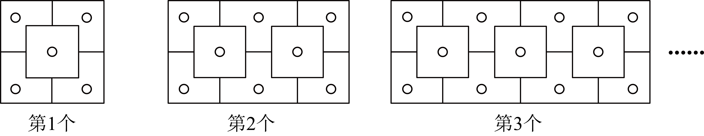
(1)第1个图中所贴剪纸“〇”的个数为5，第2个图中所贴剪纸“〇”的个数为( )，第3个图中所贴剪纸“〇”的个数为( )
(2)用含有字母的式子表示第n个图中所贴剪纸“〇”的个数是( )，当 时，所贴剪纸“〇”的个数是( )
时，所贴剪纸“〇”的个数是( )
25．（2025七年级上·内蒙古·专题练习）当砖铺设了2圈时，地砖用了12块，且地砖上的曲线围成的封闭图形有2个；…

【规律总结】
(1)当地砖铺设了5圈时，则所用的地砖为______块，曲线围成的封闭图形有______个；
(2)当地砖铺设了n（n为正整数）圈时，则所用的地砖为______块，曲线围成的封闭图形有______个（用含n的代数式表示）；
(3)若每块地砖的价钱为18元，当铺设的地砖中，曲线围成的封闭图形有25个时，则铺设的地砖共需要花费多少元？
26．（25-26七年级上·重庆·开学考试）如图，有一正方形，通过多次划分，得到若干个正方形，具体操作如下：

第1次把它分成4个小正方形，第2次将上一次分成小正方形其中的一个又等分成4个小正方形，第3次将上次分成小正方形的其中一个又等分成4个小正方形……依此操作下去．
(1)请通过观察和猜想，将第3次，第4次和第n次划分图中得到的正方形总个数 填入下表：
填入下表：
次数 | 1 | 2 | 3 | 4 | … | n |
正方形总个数 | 5 | 9 | … |

(2)请你判断，按上述操作方法，能否得到103个正方形？为什么？
次数 | 1 | 2 | 3 | 4 | … | n |
正方形总个数 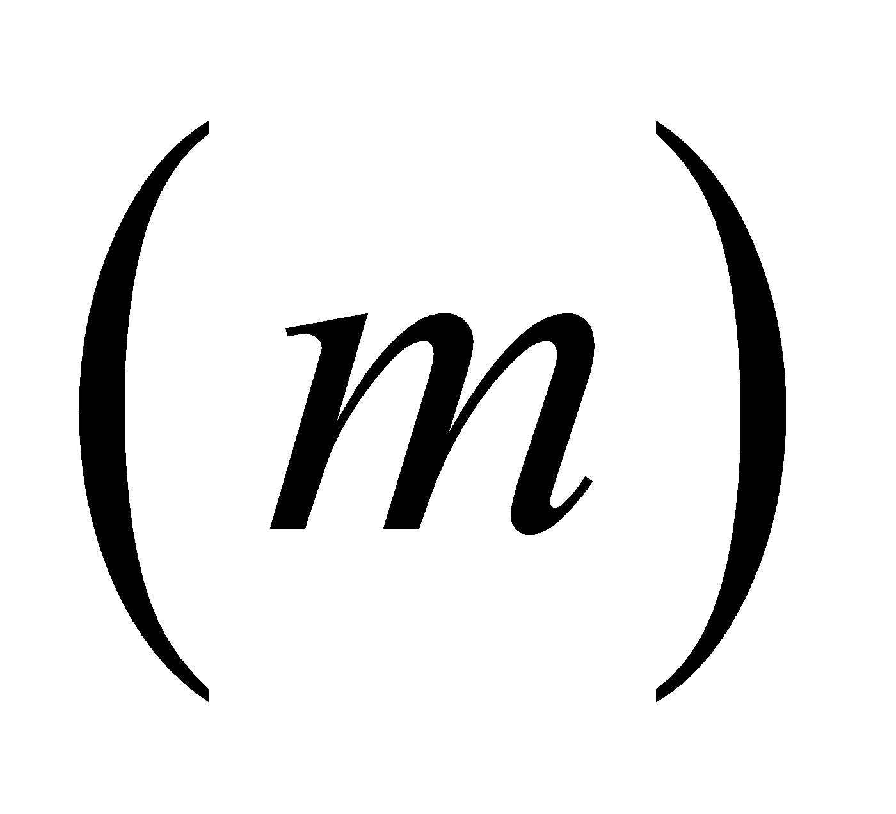 | 5 | 9 | 13 | 17 | … |
|


27．（2025七年级上·江苏南通·专题练习）古希腊著名的毕达哥拉斯学派对“三角形数、正方形数、五边形数”等形数有所研究．
（1）他们把1、3、6、10、15……这样的数称作“三角形数”（如图）．第6个三角形数是 ；第n个三角形数是 ．

（2）他们把1、4、9、16……称作“正方形数”．第n个正方形数是 ．

（3）如果用一条斜线把正方形数分成了两部分（如图），那么可以发现：任何一个大于1的“正方形数”都可以看作两个相邻的“三角形数”之和．
以此类推，第n幅图为 ＝ ＋ ．
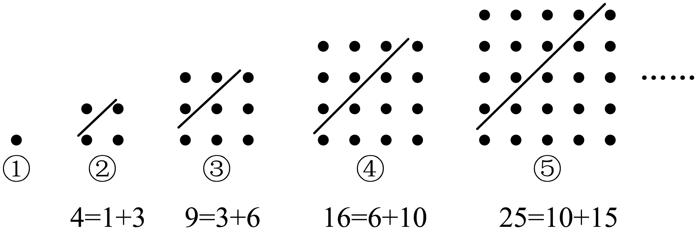